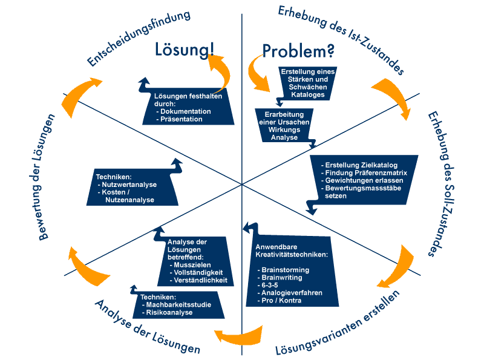
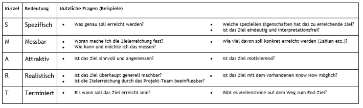
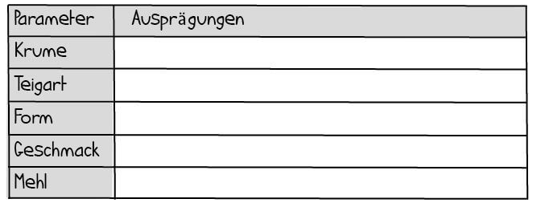
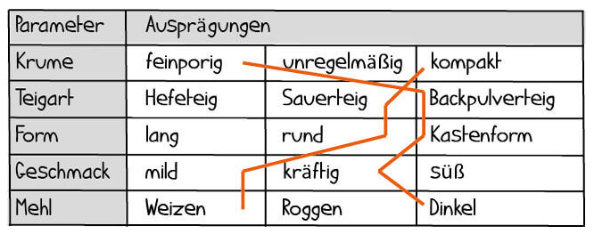
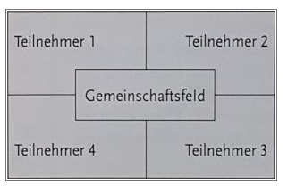
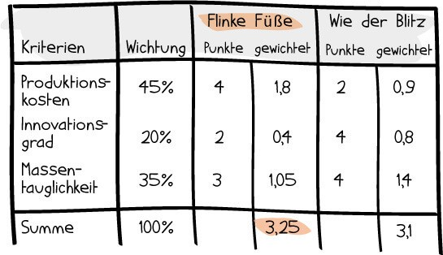

Zusammenfassung der Präsentation
Verschiedene Lernmethoden
Es ist wichtig zu wissen wie man sich auf eine Prüfung richtig vorbereitet. Notizen sind die bekannteste Art. Dabei wird Wichtiges als Notizen aufgeschrieben. Karteikarten sind beliebt, um beispielsweise Wörter auswendig zu lernen. Diese Art bietet Abwechslung, wenn man lange lernen will. Mit Mindmaps können Informationen strukturiert werden und sind dadurch sehr übersichtlich. Mit Brainstorming können schnell Gedanken auf das Papier gebracht und es kann allein oder als Gruppe gemacht werden. Zusammenfassungen sind beliebt bei den Schülern, da man dadurch auch das Thema vertiefen kann. Bei der Eselsbrücke werden unbekannte Wörter mit bekannten Wörtern verknüpft. Es kann gut verwendet werden, um Sprachen zu lernen.
Wie ich die Technik von Verschiedenen Lernmethoden finde
Ein paar dieser Lernmethoden verwende ich selbst zum Lernen. Eine Zusammenfassung zu schreiben, hilft mir am meisten beim Lernen und deshalb verwende ich diese am häufigsten. Aber ich arbeite auch mit Notizen, um im Unterricht viel mehr aufschreiben zu können, da dies mit einer Zusammenfassung zu lange dauern würde.
Lernvertrag / Lernjournal
Mit dem Lernvertrag solltest du mit dir selbst, oder einer anderen Person Ziele vereinbaren. In diesem Vertrag kann festgehalten werden, welche Ziele erreicht werden sollten und zu einem späteren Zeitpunkt kann dies überprüft werden. Beim Lernjournal wird jeden Tag aufgeschrieben, was man an diesem Tag erledigt hat. Darin kann auch enthalten sein, wo man auf Probleme gestossen ist und wie man sich fühlt.
Wie ich die Technik Lernvertrag / Lernjournal finde
So etwas wie einen Lernvertrag habe ich im Zwischengespräch abgemacht, bei dem ich mir selbst Ziele setzte, die dann nach 6 Monaten besprochen werden sollten. Ich denke mir wird dies nicht sehr viel helfen, da ich bereits selbst Ziele habe, die ich in der Lehre erreichen möchte. Dafür brauche ich keinen Lernvertrag. Im Lernjournal schreibe ich jeden Tag auf, was ich gemacht habe und Ende der Woche wird es hochgeladen. Für den Lehrmeister ist es sicher eine gute Variante, damit dieser sieht, was der Lernende bereits gemacht hat und wo er vielleicht sogar Unterstützung braucht.
Problemlösezyklus
Der Problemlösezyklus besteht aus 6 Schritten. Das Problem wird analysiert und man entscheidet sich für eine Lösung. Es sollte der Ist-Zustand mit dem Soll-Zustand verglichen werden, um das Problem zu definieren. Es werden Lösungsvarianten erstellt und diese überprüft und bewertet.

Wie ich die Technik Problemlösezyklus finde
Diese Methode habe ich davor nicht gekannt. Ich denke, falls man im Projekt auf ein grosses Problem stösst, könnte dies hilfreich sein. Diese Methode werde ich wahrscheinlich nur während der Arbeit verwenden können, aber dadurch wahrscheinlich schnell zu einer Lösung gelangen.
Speedreading
Mit dem Speedreading sollte die Lesegeschwindigkeit erhöht werden. Beim Lesen springt man unbewusst zu Wörtern zurück, so dass es das Lesen verlangsamt. Dem Auge wird beigebracht mehrere Wörter gleichzeitig wahrzunehmen. Im Internet gibt es ein paar Tools, um die Lesegeschwindigkeit zu beschleunigen.
Wie ich die Technik Speedreading finde
Ich denke, dass es sich nicht lohnt diese Methode zu lernen. Selbst habe ich es noch nicht ausprobiert, ausser einmal bei einer PowerPoint Präsentation. Ich werde sie mir wahrscheinlich mal genauer anschauen, da es mich grundsätzlich schon interessiert, ob dies wirklich funktioniert. Obwohl ich denke, dass es auch von der Person abhängt.
Smarte Ziele
Wichtig ist es sich Ziele zu setzen, damit das Projekt nicht scheitert. Spezifisch bedeutet, dass die Fragen konkretisiert sein sollen. Die Ziele sollten messbar sein, so dass die Ziele genau definiert sind. Die Ziele sollten auch für andere Personen ansprechend sein, deshalb attraktiv. Wenn die Fragen nicht realistisch sind, wird das Ziel nie erreicht werden können. Aus den Zielen sollte zu guter Letzt ein Termin resultieren, bis wann das Projekt fertig sein sollte.

Wie ich die Technik Smarte Ziele finde
Ich denke, dass ich die Methode eher weniger verwende, da bereits in einer Planung die Zeiten, bis wann was erledigt werden sollte, aber auch Meilensteine definiert sind. Dies sind ja auch Ziele, auf die man hinarbeitet. Ausserdem denke ich, die Ziele, welche ich definiere, werde ich auch ohne dies Methode schaffen. Vielleicht werde ich in der Zukunft des Besseren belehrt und werde es anwenden.
Brainstorming, Brainwriting
Die Technik des Brainstormings ermöglicht es, schnell Ideen zu sammeln. Man kann allein, oder im Team brainstormen. Das Kernprinzip dabei besteht aus zwei Schritten. Zuerst muss man Ideen finden. Dabei wird alles notiert, wobei man zum Beispiel mit Oberthemen anfangen kann und dann von dort spezifischer wird. Danach werden die Ideen bewertet, wobei der Hauptvorteil darin besteht, dass die Ideen bereits aufgeschrieben sind, weswegen man leichter differenzieren kann zwischen guten und schlechten Ideen. Im Team lässt sich dieses noch besser umsetzen, indem man reihum Ideen aufschreibt und vorige weiter entwickeln kann. So können die verschiedenen Denkansätze kombiniert werden.
Das Verfahren nennt sich Brainwriting 6-3-5 und wird in Teams von sechs Personen angewendet. Auch wenn am Ende viele Ideen nicht passend sind, besteht der Vorteil darin, dass man aufgrund der großen Anzahl der Ansätze oft auch gute Ansätze aufschreibt.
Wie ich die Technik Brainstorming und Brainwriting finde
Brainstorming habe ich schon ein paar Mal eingesetzt. Um Ideen zu finden, oder auch Lösungen, ist es sicher eine sehr gute Variante. Das Problem ist dabei, dass man leicht vom Thema abschweifen kann. Bei der Arbeit, oder wenn Ideen gesucht werden, kann diese Methode sehr nützlich sein, deshalb werde ich sie noch öfter nutzen. Das Brainwriting habe ich bis jetzt noch nicht angewendet, aber es kann gut sein, dass damit Personen nicht direkt dem Weg von anderen Personen folgen, sondern ihre eigenen Ideen aufschreiben können. Diese können dann den anderen gezeigt werden und man kann sich gegenseitig inspirieren, so dass die Ansichten von allen Personen berücksichtigt werden.
Morphologischer Kasten
Als erster Schritt beschreibt man das Problem. Anschliessend erstellt man eine Tabelle und darin wird aufgeschrieben, was für Eigenschaften zum Beispiel das Produkt haben sollte und was für Probleme gelöst werden sollten. Dann definiert man die Parameter zum Beispiel Eigenschaften wie wasserdicht, staubdicht etc. Danach können die Parameter miteinander kombiniert werden und somit kann man zu einer neuen Idee gelangen.
 
Wie ich die Technik Morphologischer Kasten finde
Die Methode habe ich bis jetzt noch nicht ausprobiert. Ich weiss nicht, ob diese Methode unbedingt von Nutzen ist. Für neue Ideen eignete sich das Brainstorming mehr, obwohl dieser «Morphologische Kasten» im Gegensatz dazu besser strukturiert ist. Wenn es für mich persönlich einen Zeitpunkt geben wird, wo ich keine Lösung finde, oder nicht mehr weiterkommen werde, komme ich auf diese Methode zurück und wende sie an.
Mindmap
Mit Mindmaps werden verschiedenste Themen und Konzepte übersichtlich dargestellt. Dabei werden Unterpunkte eines zentralen Themas mit Ästen und Unterästen um dieses platziert. Große Vorteile einer Mindmap sind unter anderem, dass sie jederzeit erweiterbar ist, dass sie einen schnellen Einblick in ein Thema liefert und leicht verständlich ist. Zwar ist das Konzept nicht überall anwendbar, zum Beispiel bei komplexeren Zusammenhängen, jedoch findet es bei Grafiken sehr häufig Verwendung.
Wie ich die Technik Mindmap finde
Mindmaps verwende ich eher weniger, da sie mich nicht so schnell zu Lösungen bringen wie zum Beispiel Brainstorming. Es wird öfter in der Schule verwendet, um sich selbst oder etwas vorzustellen. Die Mindmap ist übersichtlich, aber der Vorteil bei Notizen ist, dass Ideen direkt mit der Tastatur eingegeben werden können. Bei dem Mindmap ist dies nicht so einfach und man muss davor ein Programm suchen, mit dem man das Mindmap erstellt.
Placemat
Mit Placemat können zum Beispiel Themen im Unterricht ideal begonnen werden. Es ist dafür da, Informationen aufzuschreiben und diese dann auszuwerten. Am besten funktioniert es in einer Vierer-Gruppe.
In der Mitte eines Blattes wird das Thema aufnotiert und so viele Felder erstellt, wie es Teilnehmer gibt. Danach schreibt jeder in sein Feld was ihm in den Sinn kommt. Der Inhalt von den Feldern wird anschliessend gegenseitig gelesen. Es fördert die Zusammenarbeit in der Gruppe.

Wie ich die Technik von Placemat finde
Diese Methode ist sehr ähnlich wie Brainstorming und ich sehe keinen grossen Unterschied. Eigentlich ist es wie Brainwriting nur, dass direkt gesehen wird, was die Person aufgeschrieben hat. Beim Brainwriting gibt es noch die Möglichkeit, das Aufgeschriebene doch nicht zu erwähnen, weil man unsicher wird. Ausserdem ist es in kleineren Gruppen besser. Selbst würde ich diese Methode anwenden, obwohl ich wahrscheinlich eher auf Brainwriting zurückgreifen würde.
Nutzwertanalyse
Die Nutzwertanalyse wird meistens bei den IPERKA Schritt-Entscheiden ausgeführt. Es werden Produkte, oder Lösungen miteinander verglichen. In einer Tabelle werden Kriterien notiert und für jedes Kriterium wird eine Gewichtung gesetzt, die zusammengezählt 100% ergeben sollte. Die Punkte können dann von 1-3 vergeben werden, der Vorschlag mit den meisten Punkten ist dann der Gewinner.

Wie ich die Technik Nutzwertanalyse finde
Diese Methode haben wir bereits im Basislehrjahr angewendet und ich finde es eine wirklich gute Variante, um sich für eine Lösung, oder ein Produkt zu entscheiden. Diese Technik werde ich wiederverwenden, wenn ich mich für etwas entscheiden muss und ich mir noch nicht im Klaren bin, was die beste Lösung sein könnte. Bei der Virtualisierung habe ich die Nutzwertanalyse angewendet, um zu entscheiden, was die beste Lösung sein wird, nachdem ich diese bereits installiert hatte.